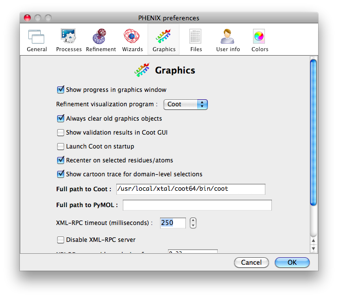
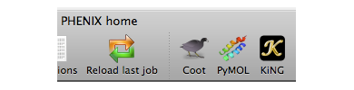

Coot is an open-source (GPL) model-building program written by Paul Emsley. If a recent version of Coot (0.5 or later) with Python enabled is installed on your system, PHENIX can use it as a viewer for map and model files. The path to the Coot executable will be detected automatically if it is already part of the PATH environment variable or is in one of several standard locations. If not, you will need to enter the path explicitly in the Preferences, as shown below.

The main interface includes a button for launching Coot, and the Utilities menu in most programs contains a "Launch Coot" item. You must start Coot from within PHENIX for the programs to communicate; a single Coot window will be shared between all windows in a single instance of PHENIX. The Graphics pane of the Preferences dialog has an option to automatically start Coot whenever PHENIX is launched.

On Windows it is called WinCoot (courtesy of Bernhard Lohkamp) rather than Coot. Moreover, you would need to specify the full path for the file runwincoot.bat, not just the path of the folder where the runwincoot.bat is located. The file is usually located in the topmost directory where you installed WinCoot.
Once the Coot window appears, you should see additional buttons on the toolbar for toggling communication with PHENIX and showing/hiding hydrogen atoms. There will also be a new menu titled PHENIX. Currently this only enables launching of phenix.refine with an open model pre-loaded. If you do not see any modifications to the Coot window, you probably downloaded a version without Python (see "Common problems" below for details).
As long as Coot is open, any PDB file can be viewed there by right-clicking the magnifying glass icon next to the file name and choosing "Open in Coot" from the menu that appears. If Coot is selected as the default PDB viewer (in Preferences->File Handling), you may simply left-click the icon. Most applications that output models and/or maps will display a button alongside the results that will load. the output file(s) in Coot.
In the phenix.refine, AutoBuild, and AutoSol GUIs, the current model and maps will be automatically updated in Coot after every cycle of refinement or building. These models will be colored cyan and are regularly overwritten; use the yellow model if you want to make permanent changes. In phenix.refine, the start model will also be displayed (in purple). To disable these automatic updates, uncheck "Show progress in graphics window" in Preferences->Graphics.
Most applications output either a simple F(obs) map (FP PHI FOM), often after density modification, or a pair of 2mFo-DFc and mFo-DFc difference maps. By default, the F(obs) and 2mFo-DFc maps will be contoured at 1 sigma (1 standard deviation above the mean) and colored blue, and the mFo-DFc map will be contoured at +/- 3 sigma and colored green and red. You can change these colors in the Preferences (Color section).
- Coot is installed, but nothing happens when I click the button. This probably means that PHENIX couldn't locate it automatically; you will need to enter the exact path in the Preferences (see above).
- "Coot opens when I click the 'Open in Coot' button, but no model or maps appear." This is almost always due to the Coot installation lacking Python, usually on Linux. If you are using one of the official packages distributed from the Coot web page, you need to download one with "python" in the name. You can double-check this by running "coot --version"; it should mention Python in the output.
- Emsley P, Lohkamp B, Scott WG, Cowtan K. Features and development of Coot. Acta Cryst. 2010, D66:486-501.
- Emsley P, Cowtan K. Coot: model-building tools for molecular graphics. Acta Cryst. 2004, D60:2126-32.